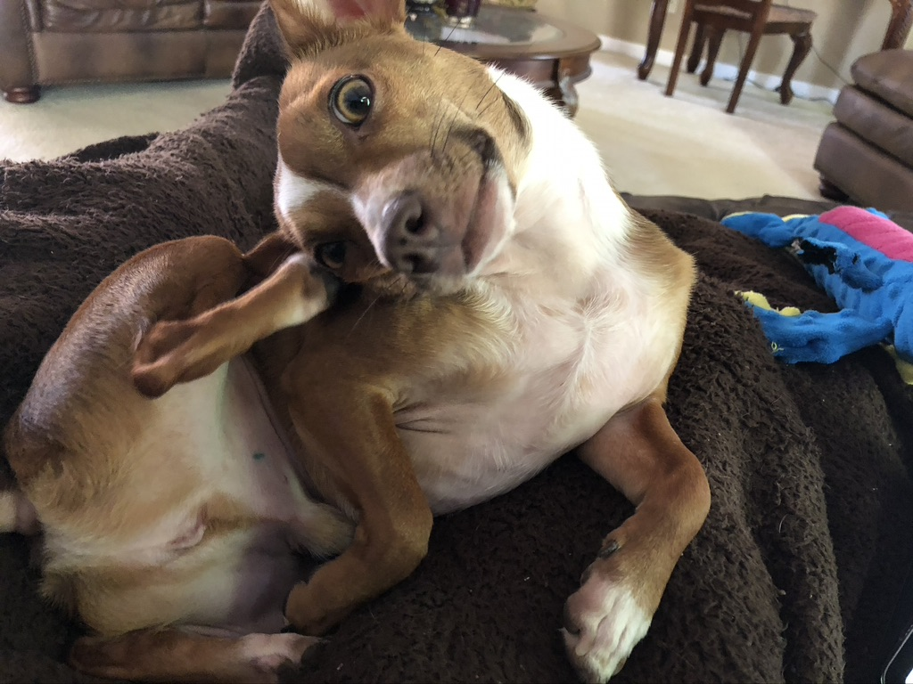

There are many animal shelters and dog rescues around the metro Atlanta area. I visited a few animal shelters before getting a dog. I went to the Atlanta Humane Society and got this little dude 3 years ago:  Click on the picture to check out the Atlanta Humane society website.
When I went to go visit AHS (The Atlanta Humane Society), I was planning on looking at a boston terrier puppy I saw online. I didn't see the puppy at all, so assuming she was already adopted, I walked around and looked at all the other dogs. I wasn't planning on actually bringing one home that day until this really skinny chihuahua-looking dog caught my eye. He didn't interact with anyone and was curled up in his pen while everyone tried to get his attention. He didn't pay attention to me, but I thought he was really cute so after looking at other dogs, I circled back to him. The second time around, he looked at me, walked towards me and stretched. "This is the one," I thought and decided to take him to the play pen. Again, he didn't do much, but he let me hold him and thats when I decided to bring him home. I decided to keep his name, Taco Bean, even though I call him by various nicknames now. When I bought him he was $300 since he was still really young. I also got a crate and a traveling crate too. He came with paperwork, a leash, a collar with tags, and a small bag of food.
I actually didn't have many problems with Taco when I first got him. He peed in the apartment one time, but that was it. The only issue I had with him was introducing him to my family when they came over to visit. He growled at them and didn't want them to pet him. Over time he got better, I think he just needed to get to know them more. Now everyone gets along great and he gives everyone kisses!
Click here If you want to return to the home page.